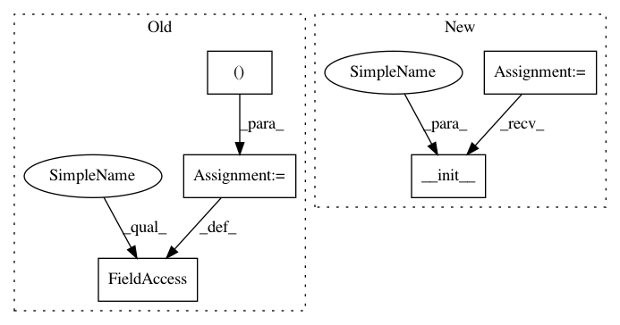

57544b1ff9f97d4da9f64d25c8ea5a3d8d247ffc,rllib/examples/centralized_critic_2.py,CentralizedCriticModel,__init__,#CentralizedCriticModel#Any#Any#Any#Any#Any#,44
Before Change
super(CentralizedCriticModel, self).__init__(
obs_space, action_space, num_outputs, model_config, name)
self.action_model = FullyConnectedNetwork(
Box(low=0, high=1, shape=(6, )), // one-hot encoded Discrete(6)
action_space,
num_outputs,
model_config,
name + "_action")
self.register_variables(self.action_model.variables())
self.value_model = FullyConnectedNetwork(obs_space, action_space, 1,
model_config, name + "_vf")
After Change
observer_space = Dict({
"own_obs": Discrete(6),
// These two fields are filled in by the CentralCriticObserver, and are
// not used for inference, only for training.
"opponent_obs": Discrete(6),
"opponent_action": Discrete(2),
})
config = {
"env": TwoStepGame,
In pattern: SUPERPATTERN
Frequency: 3
Non-data size: 5
Instances
Project Name: ray-project/ray
Commit Name: 57544b1ff9f97d4da9f64d25c8ea5a3d8d247ffc
Time: 2020-05-11
Author: sven@anyscale.io
File Name: rllib/examples/centralized_critic_2.py
Class Name: CentralizedCriticModel
Method Name: __init__
Project Name: lene/nn-wtf
Commit Name: 492698a572aaa8bf4291a31fd0e0a7b9146ef95f
Time: 2016-02-27
Author: lene.preuss@gmail.com
File Name: nn_wtf/mnist_graph.py
Class Name: MNISTGraph
Method Name: __init__
Project Name: ray-project/ray
Commit Name: 57544b1ff9f97d4da9f64d25c8ea5a3d8d247ffc
Time: 2020-05-11
Author: sven@anyscale.io
File Name: rllib/examples/centralized_critic_2.py
Class Name: CentralizedCriticModel
Method Name: __init__
Project Name: NifTK/NiftyNet
Commit Name: 72e0907d7784f62157906818686da273ab6aa7ed
Time: 2018-09-11
Author: wenqi.li@ucl.ac.uk
File Name: niftynet/contrib/segmentation_bf_aug/segmentation_application_bfaug.py
Class Name: SegmentationApplicationBFAug
Method Name: __init__